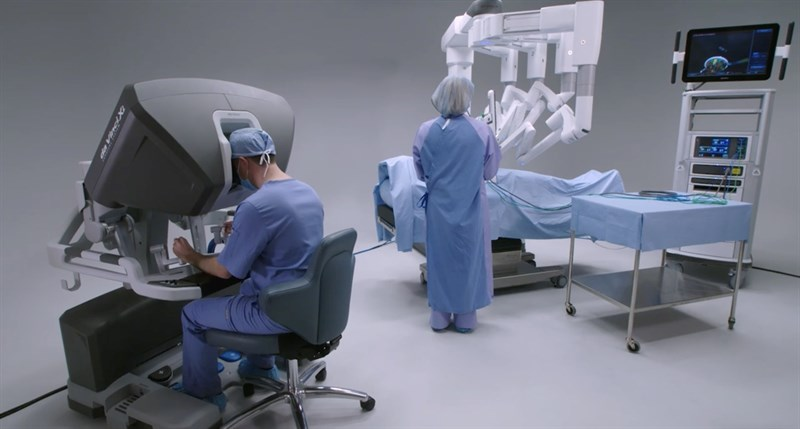

Organ printing utilizes techniques similar to conventional 3D printing where a computer model is fed into a printer that lays down successive layers of plastics or wax until a 3D object is produced. In the case of organ printing, the material being used by the printer is a biocompatible plastic. The biocompatible plastic forms a scaffold that acts as the skeleton for the organ that is being printed. As the plastic is being laid down, it is also seeded with human cells from the patient's organ that is being printed for. After printing, the organ is transferred to an incubation chamber to give the cells time to grow. After a sufficient amount of time, the organ is implanted into the patient.
Are 3D printed organs safe?
3D bioprinting remains an untested clinical paradigm and is based on the use of living cells placed into a human body; there are risks including teratoma and cancer, dislodgement and migrations of implant. This is risky and potentially irreversible.
Robotic prosthetic technology involves the use of robotic components and advanced materials to create artificial limbs for individuals who have lost a part or the entirety of a limb. These robotic prosthetics aim to restore or enhance the lost functionality, providing users with improved mobility and dexterity. Modern advancements in this field include the integration of sensors, microprocessors, and artificial intelligence to enable more natural and intuitive control of the prosthetic limbs, mimicking the movements and capabilities of natural limbs.

Robotic surgery is a minimally invasive surgical approach that utilizes robotic systems to assist and enhance the capabilities of surgeons during procedures. These systems typically consist of robotic arms equipped with surgical instruments and a console where the surgeon sits and controls the movements.
Key components include specialized instruments attached to the robotic arms, a console providing a 3D view of the surgical site, and a camera system for detailed visualization. Surgeons manipulate the instruments from the console, allowing for precise and intricate movements.
The advantages of robotic surgery include smaller incisions, reduced blood loss, shorter hospital stays, and faster recovery times compared to traditional open surgery. The robotic systems afford surgeons a greater range of motion and improved dexterity, making them particularly beneficial for complex and delicate procedures.
The da Vinci Surgical System is a prominent example of a robotic surgery platform widely employed across various medical disciplines, including urology, gynecology, and general surgery. It's important to note that successful outcomes depend on the expertise and experience of the surgical team utilizing the technology.